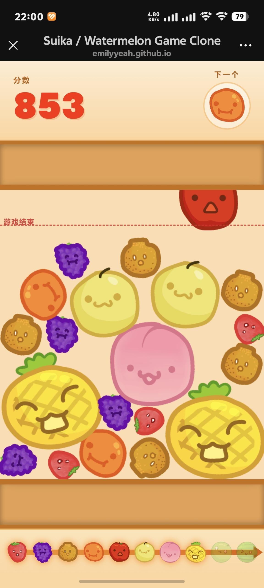
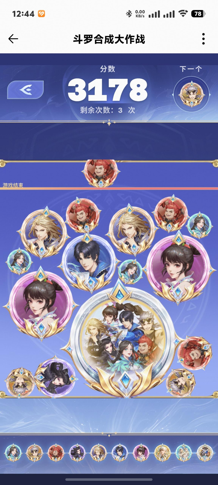
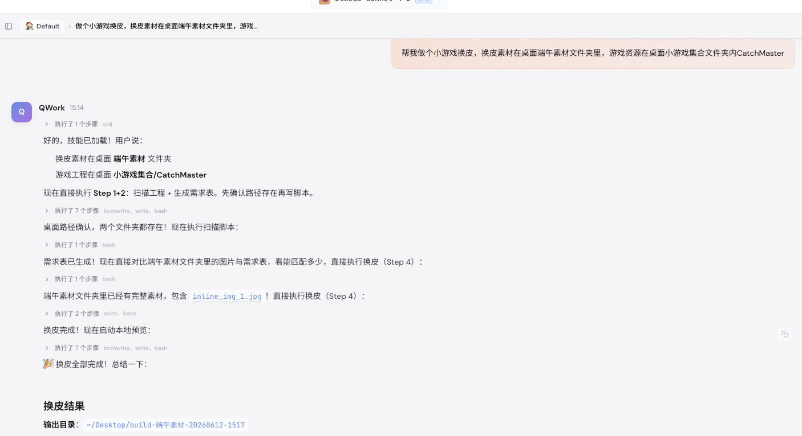
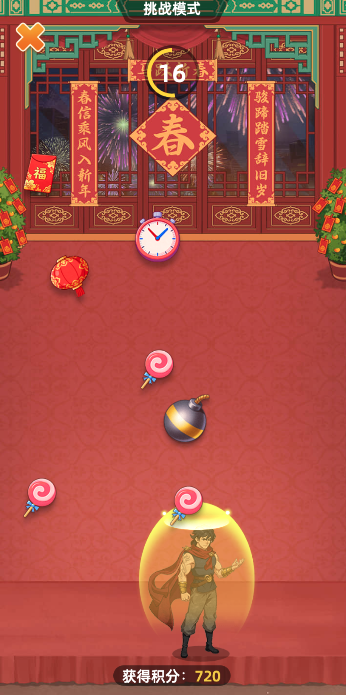
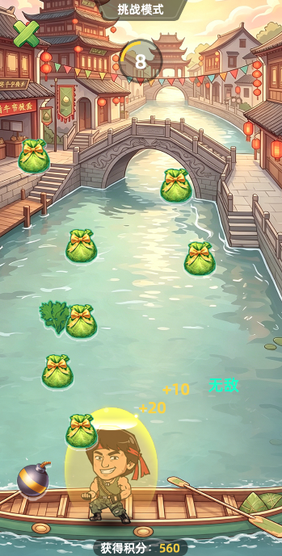
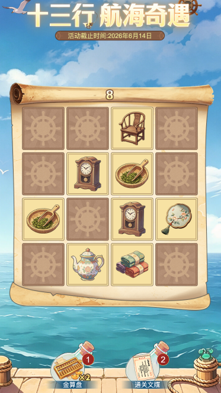
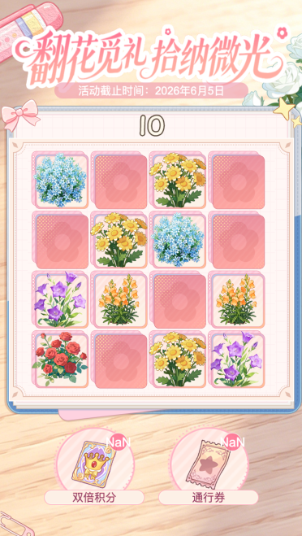

为什么要在活动里加小游戏？
固化的模板和活动玩法，参与率持续走弱，今年开始我们在活动里结合热门小游戏玩法——提升趣味性、促进玩家裂变。
🎯 这件事的价值
签到 / 抽奖 / 组队同质化严重，小游戏让玩家愿意停留和分享
带来更好的裂变效果和参与率，多项目希望接入
一套玩法做出来之后，多项目可换皮复用
⚠️ 原来的痛点
找外包开发一个简单小游戏的报价
外包交付周期，赶不上活动排期
换皮需协调技术改代码，每次至少半天
我的思路：自己用 AI 做
公司内部没有小游戏开发，但开源社区有大量小游戏代码。与其每次找外包从零开发，不如直接找开源代码，用 AI 改造适配，再接入内部接口。
用 AI 改造开源小游戏
GitHub 上找开源游戏 → AI 读代码 → 调整数值和体验 → 接入内部服务端接口 → 换上美术素材
封装换皮 Skill
把整套换皮流程封装成 AI 技能——让业务同学一句话，AI 自动完成图片替换、文案替换、本地预览全套操作
怎么把开源游戏改造成可用产品？
从 GitHub 找到开源小游戏源码，用 AI 读懂代码、接入内部接口、替换美术素材，整个过程不到 1 天。
结合热点与项目特色定玩法
AI 辅助在 GitHub 评估代码质量
AI 梳理整体结构和分层
明确改哪里、影响什么
调整数值优化 C 端体验
接入内部奖励接口
制定切图尺寸、命名规范
输出 UI 规格指导美术出图
AI 匹配素材编码并替换
预览确认 → 打包交付
源码原版

AI 改造后效果

AI 在这个过程里是怎么被用的？
为什么还需要封装成"技能"？
游戏做好后，多个项目都想要——只需换上自己的素材和文案。但"换皮"这件事有一个核心难题。
1文件名全是随机码
构建后图片变成 0614ebdb-a6d3-4d48-... 这样的编码，不知道哪个对应游戏里哪张图
2需要安装专业软件
传统方式需要本地安装 Cocos 引擎才能重新构建，非开发人员无法上手
3每次换皮都要重新"教" AI 一遍
没有沉淀，每次都要重新让 AI 理解代码结构、理解需求背景——沟通不稳定，结果质量难保证，Token 也白白浪费。
AI Skill 就是给 AI 写的一份详细操作手册——把所有技术细节（如何解析 UUID 映射、如何匹配素材、如何启动预览）全部写进手册，用的人只需说一句话，AI 自动跑完全套流程。手册写一次，永久复用。
实际用起来是什么样的？
封装好后，整个换皮流程只需要三步对话：
AI 生成的换皮需求 Excel

换皮指令对话

做完之后，效果怎么样？
从费用、速度、产能三个维度，看 AI 自研和外包模式的实际差距。
- ⏱ 交付周期约 2 周（含沟通、联调、细节优化）
- 💬 需求反复沟通，改一次走一轮
- 🎨 换皮需找内部技术用 Cocos 操作，约半天
- 📦 每季度最多做 1 个游戏活动
- ⚡ 1 天内出成品，随时可改
- 🔄 需求调整即时响应，无需等排期
- 🎨 换皮运营自助完成，不依赖技术
- ⏱ 换皮从半天压缩到 10 分钟
- 📦 本季度找源码 + 换皮共完成 4 个
可上线游戏
（原来约半天）
所需技术依赖
（找源码+换皮）
换皮效果展示
时光杂货店 · 春节接红包 · 原版

端午接粽子 · 换皮版

扫雷 · 原版

扫雷 · 换皮版

用 AI 做事，这几条最关键
把整个过程踩过的坑提炼成 3 类习惯，适用于所有用 AI 完成工作的场景。
动手之前
上来直接改，改了 A 位置 B、C 全乱。5 分钟让 AI 梳理结构、说清影响范围，省去后面反复调的时间。
收到美术图直接改，改到一半发现尺寸错、图缺失、有底色——全部返工。正确顺序：收图 → 验收 → 确认无误 → 再动手。
下指令时
「帮我调一下」→ AI 瞎猜，反复改。
「移到距顶部 30%，和金色边框对齐」→ AI 能自己验证，一次到位。
换皮显示「完成」，上线才发现加载图没换——AI 默默跳过了。指令里要加：「有任何步骤失败，必须告诉我原因」。
让 AI 从加工过的文件里反查，漏掉了核心角色图。要让 AI 直接读源头目录，中间产物可能已经丢了信息。
卡住时
试了 4 种 CSS 偏移方案都有新问题——根本原因是素材比例不对。AI 执行再快，方向错了只是错得更快。
会的话就封装成流程或 Skill——让 AI 帮你把步骤固化下来，下次一句话触发，不用重头来。
人和 AI 各自的角色
欢迎提问交流
关于 AI 工具使用、换皮流程、成本效果，
或者你的业务有没有类似的场景可以尝试——都可以一起聊。